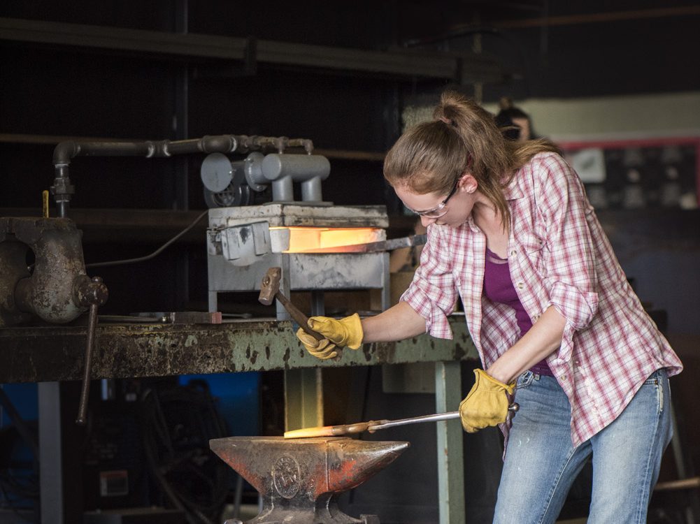
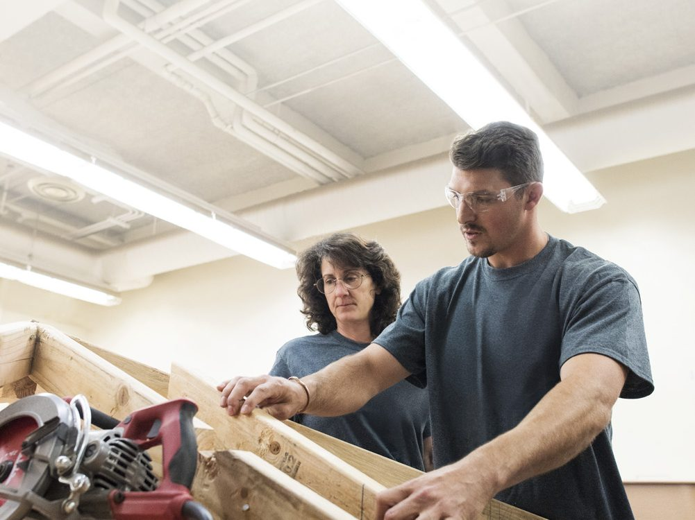
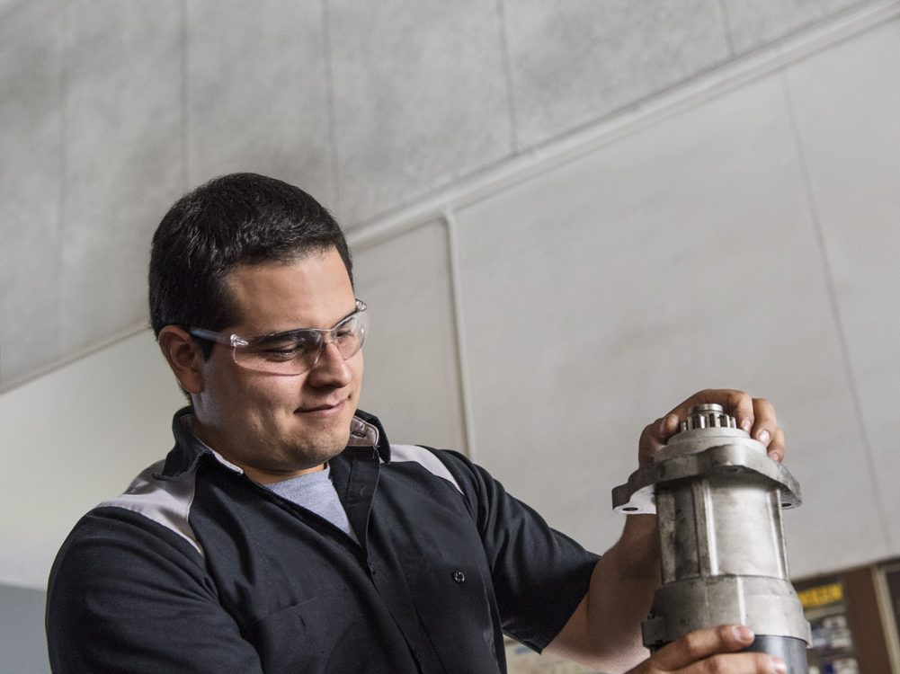

Skip to the library
CPL Fact Sheet
MAP
Find your college
MAP dashboard
Credit for Being You
Theme
Light
Dark
CPL Library
Search
For
Everyone



Pause photos
Loading the library…
Sort
Most recent
Oldest first
Title A–Z